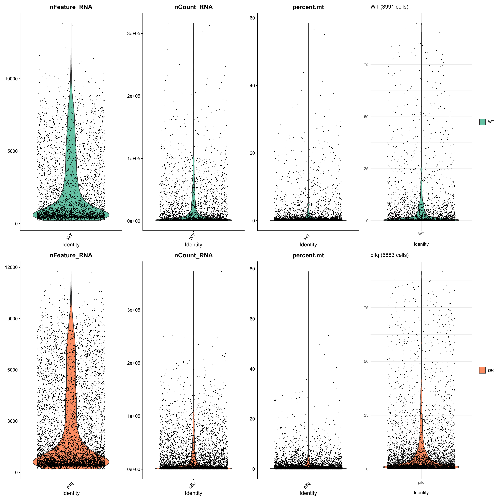
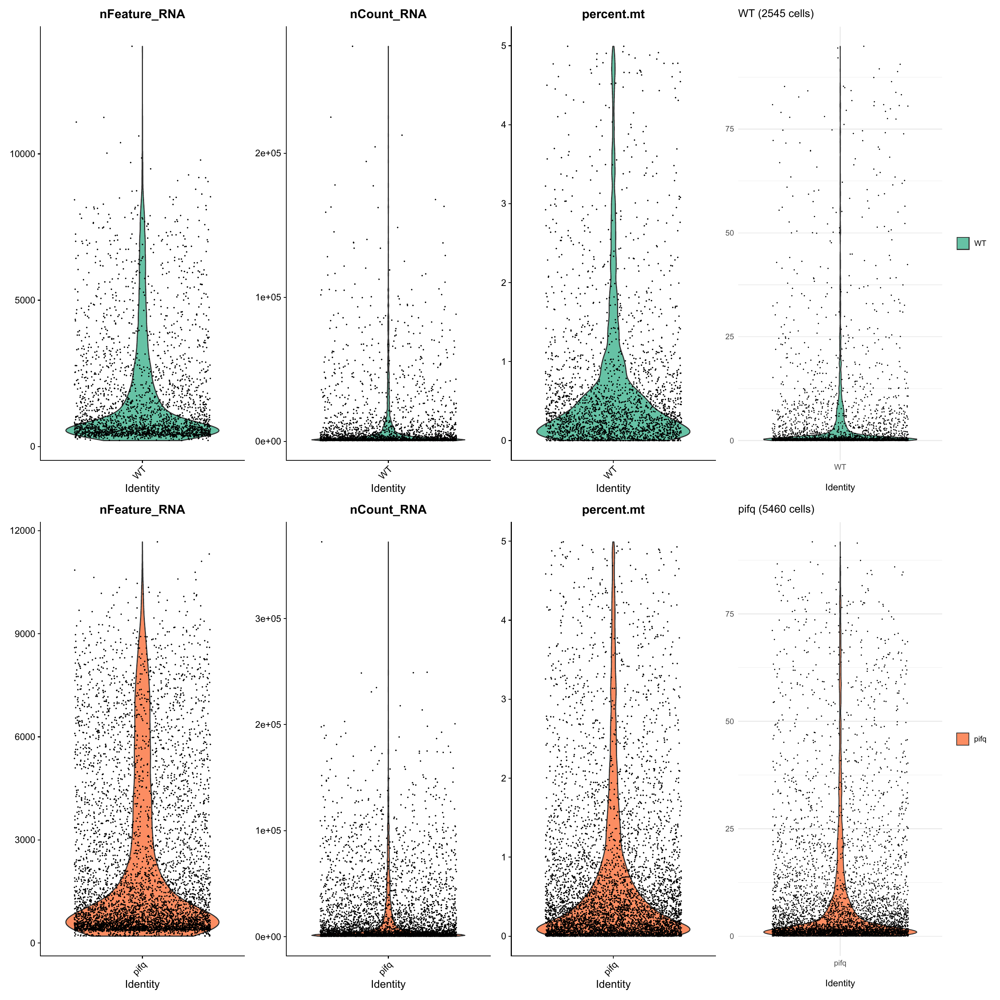
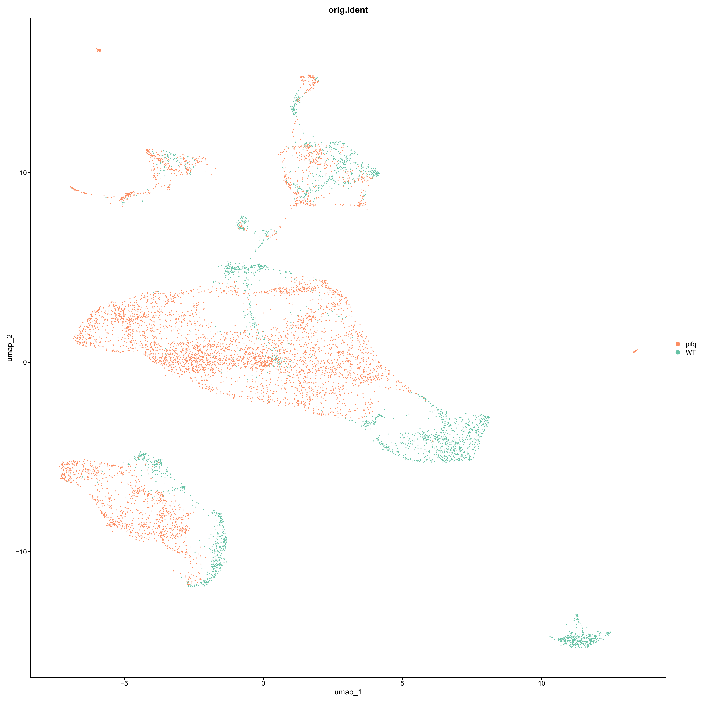
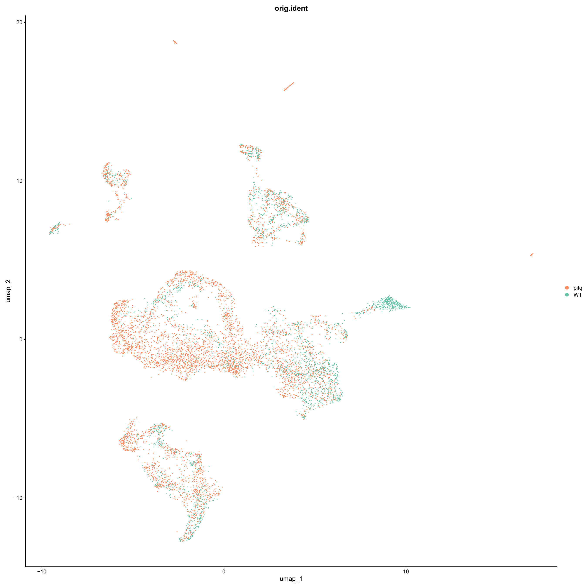

Part 1 — Computational Environment and Quick Start
2026-06-24
The pipeline source code is available at
https://github.com/cliford2001/SingleCell:
git clone https://github.com/cliford2001/SingleCell.git
cd SingleCellThe repository is meant to sit inside a working directory that also
holds the raw data and the pipeline’s output folder — for instance
~/your-workdir/SingleCell, with
~/your-workdir/resultados alongside it. That parent
directory, not the repository alone, is what gets mounted into the
container, so that code, input matrices, and results are all visible
together at /workspace.
Docker packages R, Python, and every pipeline dependency into one
portable image (matigara/scrnaseq:latest),
so the analysis runs identically on any machine with Docker installed.
Two equivalent ways to start it:
docker run -it --rm \
-v ~/your-workdir:/workspace \
matigara/scrnaseq:latest /bin/bashPulls the image if missing and opens a shell. Replace
~/your-workdir with the actual path to that working
directory if it lives somewhere else.
docker-compose.ymlRun as-is from the repository root:
docker compose pull
docker compose run --rm r bashpull only reads that file and downloads the image it
names — unrelated to git, which just placed the file on disk. Same
~/your-workdir → /workspace mount as Option
1.
Either way, /workspace is
~/your-workdir on the host: files written there persist
after the container exits.
Once inside the shell, Chapter 1-2 commands are typed into R, and Chapter 3 commands into Python:
Rpython3Running Option 1 opens a self-contained terminal inside the container, separate from the host shell it was launched from:
docker run -it --rm \
-v ~/your-workdir:/workspace \
matigara/scrnaseq:latest /bin/bashR is then started from that terminal, on its own:
RChapter 1 (capitulo1_single_cell.R) runs entirely from
this session.
After entering the R session, Chapter 1 starts by defining the two
paths that control the analysis. PIPELINE_DIR points to the
helper scripts inside the container. DATA_DIR is the
mounted project directory, and base_dir is the root under
which all step-specific outputs are written. In a standard Docker run
these paths do not need to be changed.
PIPELINE_DIR <- "/workspace/ScRNASeq-Docker/workflow"
DATA_DIR <- "/workspace/."
base_dir <- file.path(DATA_DIR, "resultados")The analysis environment is then initialized by loading the package set, custom plotting utilities, and core workflow functions. A fixed random seed is used throughout the chapter, Seurat 5 compatibility is enabled, and the working directory is set to the mounted project folder.
source(file.path(PIPELINE_DIR, "load_libraries.R"))
source(file.path(PIPELINE_DIR, "custom_seurat.R"))
source(file.path(PIPELINE_DIR, "ScRNA_Analysis_Functions.R"))
set.seed(1807)
options(Seurat.allow.s4 = FALSE)
setwd(DATA_DIR)Finally, the pipeline creates the output directory structure under
resultados/. The helper functions use
output_dir as the active destination for plots and tables;
it is initialized to base_dir and reassigned at the start
of later sections.
list2env(create_pipeline_dirs(base_dir), envir = .GlobalEnv)
output_dir <- base_dirSection 1 begins by selecting the first output folder and declaring
the sample manifest. Each sample entry provides the CellRanger
filtered_feature_bc_matrix directory, the label used in
figures, and the experimental condition used downstream. The same
structure is used for any number of samples; only paths, labels, and
condition names need to be adapted.
output_dir <- dir_01
samples <- list(
list(file = "cellranger/sample_1/outs/filtered_feature_bc_matrix",
label = "sample_1", condition = "condition_1"),
list(file = "cellranger/sample_2/outs/filtered_feature_bc_matrix",
label = "sample_2", condition = "condition_1"),
list(file = "cellranger/sample_3/outs/filtered_feature_bc_matrix",
label = "sample_3", condition = "condition_2"),
list(file = "cellranger/sample_4/outs/filtered_feature_bc_matrix",
label = "sample_4", condition = "condition_2")
)One color is assigned to each sample label so that all QC and UMAP plots use the same visual identity throughout the workflow.
colors <- c(
"sample_1" = "#66c2a5",
"sample_2" = "#41ae76",
"sample_3" = "#fc8d62",
"sample_4" = "#e34a33"
)The Arabidopsis mitochondrial and chloroplast gene prefixes are then
used to compute organelle-derived read fractions for every cell. These
pre-filter QC distributions are saved as qc_prefilter.pdf
and are inspected before choosing the filtering thresholds in the next
step.
mt_pattern <- "^ATMG"
cp_pattern <- "^ATCG"
seurat_list_raw <- load_seurat_samples(
samples = samples,
DATA_DIR = DATA_DIR,
mt_pattern = mt_pattern,
cp_pattern = cp_pattern
)
plot_qc_batch(seurat_list_raw, colors, "qc_prefilter.pdf")
plot_qc_batch().
Section 2 applies the first cell-level exclusion criteria. The default thresholds retain cells with at least 200 detected genes and less than 5% mitochondrial signal. DoubletFinder is then applied sample-by-sample through the filtering helper, and the same QC panel is regenerated after filtering.
output_dir <- dir_01
seurat_list <- filter_seurat_samples(
seurat_list_raw,
min_features = 200,
max_mt = 5
)
plot_qc_batch(seurat_list, colors, "qc_postfilter.pdf")The filtered list is saved as a checkpoint so the workflow can restart from this point without reloading and refiltering the raw matrices.
saveRDS(
seurat_list,
file.path(dir_objects, "seurat_list_postfilter.rds")
)
The filtered samples are merged into one Seurat object and processed with the standard log-normalization workflow. Variable features are selected by VST, the matrix is scaled, PCA is computed over 30 components, and an initial UMAP is generated from the PCA space. This pre-Harmony UMAP is used to visualize sample structure before batch correction.
output_dir <- dir_01
pbmc_harmony <- reduce(seurat_list, merge) %>%
NormalizeData(verbose = FALSE) %>%
FindVariableFeatures(
selection.method = "vst",
nfeatures = 2000,
verbose = FALSE
) %>%
ScaleData(verbose = FALSE) %>%
RunPCA(npcs = 30, verbose = FALSE) %>%
RunUMAP(reduction = "pca", dims = 1:30, verbose = FALSE)The pre-correction UMAP is saved by sample identity, followed by a checkpoint of the merged object.
save_pdf(
DimPlot(pbmc_harmony, group.by = "orig.ident", cols = colors),
"umap_preharmony.pdf"
)
saveRDS(
pbmc_harmony,
file.path(dir_objects, "pbmc_harmony_preharmony.rds")
)
Harmony is then run on the sample identity field
(orig.ident) to reduce sample-level batch structure while
preserving biological variation. The UMAP embedding is recomputed from
the Harmony reduction, and downstream sections use Harmony coordinates
rather than the original PCA space.
output_dir <- dir_01
pbmc_harmony <- pbmc_harmony %>%
RunHarmony("orig.ident", plot_convergence = FALSE) %>%
RunUMAP(reduction = "harmony", dims = 1:30, verbose = FALSE)The post-Harmony UMAP and object checkpoint are written to disk for later resolution testing, clustering, annotation, and export.
save_pdf(
DimPlot(pbmc_harmony, group.by = "orig.ident", cols = colors),
"umap_postharmony.pdf"
)
saveRDS(
pbmc_harmony,
file.path(dir_objects, "pbmc_harmony_postharmony.rds")
)